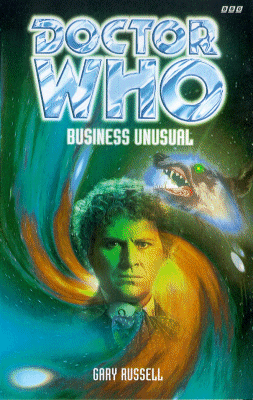

|
Business Unusual
|
BASIC PLOT DOCTOR COMPANIONS MATERIALISATION CIRCUIT PREPARATORY READING CONTINUITY REFERENCES Pg 10 "A job that required him to be diplomatic to members of ever-changing governments, be they British prime ministers or representatives of the Tri-Planet Alliance of Calfadoria. A job that took him from the meteorologically challenged depths of southern England to the morally challenged planet Parakon." Calfadoria is mentioned in the audio adventure, The Sirens of Time. The reference to southern England is presumably because that's where most alien invasions were during the 1970s (although may refer to the audio The Spectre of Lanyon Moor). Parakon is relevant in Paradise of Death and The Ghosts of N-Space. "He had been instrumental in setting the whole taskforce up and what had all those years of loyal service cost him? A marriage and family plus, briefly, his mental health." UNIT, of course, created at his own instigation after The Web of Fear. The decline of the Brigadier's first marriage is detailed in The Scales of Injustice, whilst his daughter and grandson are seen in Downtime. His mental health issues were a result of his experiences in Mawdryn Undead, although were possibly also connected to the Doctor's interference in his mind during No Future. Pg 11 Mention of Colonel Charlie Crichton, the Brigadier's successor at UNIT, as seen in The Five Doctors. There are a number of mentions of Crichton throughout the book, not all of which I note. "And he had felt very unheroic as his ever-loyal staff corporal, Carol Bell, drove him away through the UNIT gates and into the Buckinghamshire countryside, then crossing over the M1 and up into Hertfordshire, where she helped him unpack his few worldly possessions into a tiny wooden version of a Nissen hut that he would call home for the next decade or so." We saw the hut and the new job in Mawdryn Undead. Corporal Bell appeared in The Mind of Evil, The Claws of Axos, The Devil Goblins from Neptune, The Eye of the Giant, The Scales of Injustice and Face of the Enemy, but see also Continuity Cock-Ups. "He'd caught up with some of his ex-colleages over the years, many at the reunion party back in October '83." Just after the events in the later time period of Mawdryn Undead and the same one seen in The Five Doctors. "John Benton had returned to active service, while Mike Yates and Tom Osgood had set up their tiny tearooms just outside Reading." Benton had been selling used cars (Mawdryn Undead), but what is stated here squares with his appearance in Genocide. Sergeant Osgood appears in The Daemons, The Eye of the Giant and The Face of the Enemy, and is recalled to active duty in The Shadow in the Glass. The reference to tiny tea-rooms might just refer to Recall UNIT or the Great T-Bag mystery, an anti-Thatcherite video made by Richard Franklin, but it might not. "Even that awful Shakespearean-sounding man had been there." It's not clear who this is meant to be. Possibly Captain Hawkins, if this is a joke about Paul Darrow. "Carol Bell had left shortly after Lethbridge-Stewart went to Brendon, married, and now had one child. Hearing that had reminded him of his own daughter, Kate. Where was she?" He catches up with her years later, in Downtime. "After his divorce from Fiona had come through, he'd lost track of her (or Fiona had used her father to ensure that Alistair never knew where she was)." The divorce was seen in The Scales of Injustice. "Other old faces had greeted him. Dennis Palmer, Masie Hawk, Liz Shaw and even that old curmudgeon Scobie had dragged himself away from whatever retirement home he'd absconded to." Corporal Palmer appeared in The Three Doctors - his first name was not confirmed on screen, but the actor who played him was called Denys (note spelling) Palmer. Masie Hawk is the unnamed radio operator in Day of the Daleks as well as appearing in The Scales of Injustice, but see also Continuity Cock-Ups. Liz Shaw is... well, you all know who Liz Shaw is. Scobie is from Spearhead from Space and also appears in The Scales of Injustice. Pg 12 "And, of course, to crown it all, the Doctor (well, four of them at least) had whisked him away for a while and conspired to make his first trip to his/their home planet, Gallifrey, a memorable one. It had given him a brief chance to pay his respects to old friends such as Miss Smith and Miss Jovanka." The re-union was clearly set during The Five Doctors. This is, obviously a reference to Sarah-Jane and Tegan. "Greyhound One had been the Brigadier's personal call sign back in his UNIT days. The inference was clear." A continuity reference that explains itself. And then patronizes the reader. Pg 16 "I am, if I remember, some kind of "plodding, dunderheaded flatfoot with the imagination of an Ogron"." I can't say for certain, but I'll bet this is word for word something from The Scales of Injustice. Ogrons come, initially, from Day of the Daleks. Pg 17 "The Usurian Company has been locked out of the files and the Master's attempt to defraud the Dow-Jones of $68 million and reduce the contents of Fort Knox to dust is scuppered." This originates in a throwaway line from Millennial Rites, detailing the circumstances in which the Doctor and Mel first met (and is, I think, also the original plan for their first adventure together before the cancellation crisis, and then The Trial of a Time Lord, reared their respective heads). Russell, thankfully, dodges having to tell that story here, and makes the dodge work. The Usurians are from The Sunmakers, while the Master is from Terror of the Autons et al, but you knew that. For the record, "Dow Jones" does not normally have a hyphen. Pg 19 "'As long as none of them involved little green men from outer space -' 'Or inner time, lest we forget.'" Paraphrase of a fourth Doctor quote from The Stones of Blood. Pg 22 "I was twenty-five the other day and have just spent three years at university. In London, that great city of vice and despoilment." Mel attended the University of West London, as according to Millennial Rites. Pg 25 "Detective Inspector Lines had used the space-time telegraph the Doctor had given him after a previous encounter." Presumably some time after The Scales of Injustice (it makes no sense for it to happen in that story - the Doctor wasn't exactly going anywhere any time soon at that point). We learned of a space-time telegraph in Revenge of the Cybermen. Reference to Daleks, Cybermen and Sontarans. Pg 27 "Melanie Bush, known as Mel. Memory like an elephant. Fond of carrot juice. Energetic. Always trying to make him slim." Pretty much her complete character, as seen on screen, and possibly word for word Eric Saward's character description. "Some time back, his peers, his fellow Time Lords on Gallifrey, had placed him on trial." The Trial of a Time Lord. There follows a detailed summary of said story, which I do not feel the need to type out here. Pg 28 The plot summary continues: "By using the Matrix on Gallifrey, the Doctor had presented an event from his own future involving a battle with the vile Vervoids as his defence, and in this future Mel had been with him." The Trial of a Time Lord, parts 9-12 (Terror of the Vervoids). There's something going on with alliterative monsters in this book, and I don't know why. "Later, she had been snatched out of her rightful timestream and brought to the courtroom to help him." The Trial of a Time Lord, parts 13-14 (The Ultimate Foe). "After leaving the court, the Doctor had returned her to the planet Oxyveguramosa, where she rejoined 'her' Doctor, his future, and he had departed." This happens in the novelization of The Ultimate Foe, by Pip and Jane Baker. Only Pip and Jane could make up a planet name like that one. "Hoping to avoid his own destiny, he had subsequently gone out of his way to avoid this time period in Earth's history, teaming up instead with other friends and new companions." This is a running theme (avoiding the Valeyard by avoiding Mel) which runs through many of the Sixth Doctor books, from Time of Your Life right up until Millennial Rites. These other companions include Frobisher (Mission: Impractical), Grant Markham (Time of Your Life and Killing Ground) and Evelyn Smythe (Instruments of Darkness and numerous audios), the latter of whom comes from, erm, this time period in Earth's history. Pg 29 Mel, thinking about university days: "Also, her parents were about five or six years older than Chantel's and everyone else's." Chantel appears in Millennial Rites. Pg 31 "Although I^2's offer had contained the better financial package (and was therefore the one her mother favoured), the ACL deal had looked more potentially rewarding and so that was the one she had elected to take." In the end, she took neither. I^2 were the villainous corporation in System Shock; Ashley Chapel Logistics (ACL) fulfilled the same function in Millennial Rites (having absorbed some of their remaining corporate assets). And people think Microsoft is evil. Pg 38 "'This is a special delivery request,' he said quickly. 'Requiring form C19.'" Major Simmons phones Sir John Sudbury. C19 (and Sir John) are first mentioned in Time-Flight. Pg 44 "On it was the face of a young man, perhaps in his mid-twenties, wearing Ray-Bans, his short jet-black fair gelled into a slightly spike brush. Running down his left cheek, from under the dark glasses, was a scar that joined up with a slightly mutated top lip." This is the pale young man from The Scales of Injustice. His scar marks him out as a Doctor Who villain of the Pertwee era just as clearly as smoking marked you out as evil in The X-Files. Pg 54 "The future, as they say, is SeneNet." This nearly anticipates the UK Orange Phones advertising slogan by some years. Pg 63 "Not that the Bush's owned any dogs." I mention this only because the grammar is wrong - it should be 'Bushes', or possibly 'Bushs', but there should certainly be no apostrophe. Perhaps Christine Bush was particularly bad at grammar. Pg 64 "I am afraid this cantankerous cabbie will not accept Andromedan Grotzits." The Doctor has been known to be stupid about currency in the past (Deep Blue, amongst others) and it's always annoying. Grotzits were Glitz's measure of currency in The Trial of a Time Lord and Dragonfire. The fact that they are Andromedan ties into Trial, where they were a part of the plot. Pg 81 "The Stalker was augmented originally by a guy named Traynor. I was just his lackey really, just did what he told me to. When Traynor died, a lot of the secrets went with him. All I know is that some green sludge they found when drilling underground added to the dog's body. Turned him into the beast he is today." The grammar in that sentence is really that bad. Traynor appeared in the first couple of pages of The Scales of Injustice before being brutally killed by the Stalker. The Stalker itself originally appeared in that book, having been augmented by the green sludge we saw in Inferno. Pg 86 "He pushed open the door into the conservatory and looked out on to the beautiful back garden. A high wooden fence protected it from nosy neighbours. There was a goldfish pond in one corner and a compost heap in the other." This explains how the Doctor knew that Mel's garden had a compost heap in it when he mentioned it in The Trial of a Time Lord, parts 9-12 (Terror of the Vervoids). Pg 87 "The ebullient tone, the way every other syllable was stressed (regardless of whether it needed to be) and the way the last word of each sentence was almost underlines in red three times suggested just one person." This is a harsh, if fair, assessment of Mel's vocal patterns. Pg 88 Mention of Carrot Juice. How we laughed. Pg 89 "I love crosswords. Especially The Times. I used to do The Times crossword all the time a life or two back." This may be a reference to The Five Doctors, in which the Second Doctor read about the UNIT reunion in tomorrow's Times. Let us not, for the time being, discuss quite why a top secret institution's birthday bash had reporters in attendance, shall we? Pg 91 Another mention of the Sixth Doctor avoiding his Valeyard-filled future. And another mention of Carrot Juice. Pg 93 Another reference to the Brigadier's call-sign being Greyhound. Pg 94 "Lieutenant Sullivan had been one - used him to go undercover at the Think Tank place during the missile crisis." Harry Sullivan, of course, and his part in the plot of Robot. "Then there had been RSM Champion, who had helped root out that Lacaillian, trapped on Earth before the Russians had found it." A Corporal Champion appears in The Ambassadors of Death, and this is presumably he. The actual encounter is unrecorded. See also Continuity Cock-ups. Pg 95 Another mention of Brendon School. Pg 97 "Oh, one other thing. Don't call me "Doc" - I am not some quack from a cowboy movie. Is that clear?" Or, indeed, from The Gunfighters. The Doctor's aversion to the diminution of his name is made clear in The Five Doctors. Pg 98 Mention of Mel's eidetic memory, rather unsubtly slotted into the dialogue. Pg 103 "The Doctor had first met Lines when he had been a young police sergeant in a small village station near Hastings." The Scales of Injustice. "The Doctor had quite a few friends like that on Earth, apart from his old UNIT associates. There was a fish and chip seller in Bolton, Harry in his Shoreditch tea shop, two dear old ladies who spent most of their time gossiping about their neighbours in Seattle, a Safari driver in Africa, dear old Wilkins at St Cedds, who always reminded him of Billy Bunter, and even a mad Austrian who lived half-way up a snow-clad mountain but always had ways of getting scuba gear for exploring under water in any part of the globe. And as for that dotty Welsh beekeeper..." Deep breath: Unclear reference, Remembrance of the Daleks, unclear reference, unclear reference, Shada, unclear reference, Garonwy from Delta and the Bannermen. Pg 104 "Here we are: 1989 - still at Brendon. Not married to Doris yet." Doris is the Brigadier's second wife, as we see in Battlefield (and first mentioned in Planet of the Spiders). Interestingly, this retcons Mel as being a companion whose origins were from the future, at least as far as Season 23 was concerned. It's not entirely clear why this book wasn't set in 1986. Oh, and see Continuity Cock-Ups. Pg 105 "And they'd met at least once more since, when the Doctor had been very tall with a daft scarf." Bob Lines' meeting with the Fourth Doctor remains unrecorded. Presumably this was when he acquired the space-time telegraph. Pg 107 "Mel felt like Alice Liddell, trying to believe thirteen impossible things before breakfast." This is a mis-quote from Alice in Wonderland, when Alice is talking to the March Hare. In the original novel, she states that it's six impossible things, but when the Doctor quotes it in The Five Doctors, he maintains that it is three. Liddell, by the by, is the surname of the girl, Alice, for whom Lewis Carroll told and wrote his stories. It's never used for the fictional Alice, however, so the line here is arguably wrong on two counts. Pg 112 "One day there'll be a Mr Mel and you'll wonder where the time went." There would, eventually, be a Mr Mel, as we see in Heritage, although quite how Mel got there is another question entirely. Pg 120 "Do give me a call next time you need to see off marauding Macra or zealous Zygons." Told you there was an alliteration thing going on. The Macra Terror and Terror of the Zygons, respectively. Pg 125 "It has Stahlman's gas racing through its guts for God's sake, Jones." Inferno. And see Continuity Cock-Ups. Pg 128 Another reference to Scobie, from Spearhead from Space. "Then you left me for dead, blasted down by some orange blob while protecting some stupid installation that got blown up anyway." The Claws of Axos. It appears that Erskine was a member of Havoc. Reference to Captain Yates and "that pretty bit of totty he [the Doctor] dragged about", which is presumably Jo Grant. "Until the C19 clean-up crews moved in" C19 from Time-Flight again. Pg 129 "I stood there, sir, and watched my own funeral take place, unable to give comfort to my wife, my child." This may be a reference to a very similar sequence in the seminal comedy The Fall and Rise of Reginald Perrin. It may not. "Lethbridge-Stewart went cold very suddenly. He remembered a time, years ago now, when he discovered that someone was siphoning off resources, setting up their own mini-army, using alien technology purportedly going for storage with the government but really ending up in the hands of some nameless people." The Scales of Injustice. "But the main people had escaped." Because they were needed to appear in the sequel, this very book. Pg 131 "Moments in which men died under Cyberguns, Auton energy blasts, Axon electrical surges or Zygon stings." The Invasion; Spearhead from Space and Terror of the Autons; The Claws of Axos; Terror of the Zygons. Pg 137 "I want a Zygon, Ciara. I want to know how their metamorphic properties work, how cells can transmute on such a scale. And I want to understand how Rapine grows, why the Nunton nuclear complex didn't blow half of Avon into the stratosphere and what properties Validium offers us." Terror of the Zygons, The Paradise of Death, The Hand of Fear (and we all want to know why it didn't blow half of Avon away), and Silver Nemesis (this latter set about nine months before this adventure). "A race of beings who had willingly sacrificed their humanity to become the perfect machine creatures." The Cybermen, of course. Pg 138 "Prepared from Cyber-technology prior to their abortive invasion of Earth, launched from London's sewers." The Invasion. Pgs 138-139 "However, over the last few years he had begun to realize that it was beginning to slow down, because whatever Cybermen used to keep themselves alive came from whatever planet or space station they existed within, and there was no one on Earth with the right technology to replace the decaying pieces of his body." Cybermen drawing on the power of their 'vehicle' was made clear right at the beginning in The Tenth Planet (although it doesn't explain how they could operate in The Five Doctors - presumably on battery reserves). Interestingly, what the managing director feels here is not dissimilar to the experiences of Tobias Vaughan in the distant future of Original Sin. Pg 140 "On it was the cracked stone head of a gargoyle, its body long since powdered in a massive explosion. 'Alas poor Bok,' he said, 'I never knew you well.'" Bok from The Daemons. Incidentally, 'Alas poor Yorick, I knew him well' is a misquote; the original reads 'Alas poor Yorick, I knew him, Horatio,' and is from Hamlet. "Recovered from the grounds of Auderly House." Day of the Daleks. Pg 141 "The managing director stepped back and regarded his collection of trophies, dating back to the thirties." Mayhaps from Illegal Alien or other adventures set thereabouts in time. "Imagine the Falklands War fought with disintegrator guns, or the Gulf War, where enemy bases could have been invaded by giant maggots, carrying a lethal plague that could kill a man in fifteen minutes." Disintegrator guns, as other sections of this book prove, are from Auton technology (Spearhead from Space, Terror of the Autons), while maggots are from The Green Death and the lethal plague, one presumes, from Doctor Who and the Silurians. And see Continuity Cock-Ups for yet another all-time great. "Everybody held in a state of detente in case SeneNet chose to use a Yeti's web gun or a Methaji virus on anyone who was proving disagreeable." We saw the Yeti web guns in The Web of Fear and, given that they had a range of about six feet, one wonders exactly how they would be a serious deterrent. Methaji is an uncertain reference, but let's hope it's rather more effective than Yeti guns when we finally find out what it is. Pg 150 "'"Today Brighton, tomorrow the world", to borrow a phrase.'" It's not continuity; it's just really annoying that he's already said this once, on Pg 73. It's a really bad line anyway, why would he want to repeat it? Pg 151 "Blasted by Ogron disintegrator guns, or that K1 robot with its stolen disrupter. Or men crushed to virtually nothing but pulp under the robot's giant feet, or the heavy flippers of the Skarasen. Men lost forever in the crevices of underground tunnels or the bellies of large intelligent plants." Deep breath again: Day of the Daleks; Robot; Robot; Terror of the Zygons; (probably) Doctor Who and the Silurians (amongst others); The Seeds of Doom. It should be noted that the Brigadier was not around in The Seeds of Doom, but he presumably heard about it afterwards. "His own losses - his marriage and the joy of watching his daughter grow up" The Scales of Injustice, Downtime. Pg 160 "Keston heard a strange click and then stared in amazement as the man's fingers dropped away on a hinge." The Auton guns from Spearhead from Space and Terror of the Autons return. ('Destroy! Total destruction!' - which is exactly what happens.) Pg 162 "And I don't like bats, and there are lots of them in these woods. I once got a baby bat caught in my hair and had to have it cut free." This explains Mel's fear of bat-like creatures, as we saw in Time and the Rani. "She had an IQ of 162." By coincidence, also the page number. This was confirmed in Millennial Rites. Pg 163 Another reference to ACL, from Millennial Rites. "Infinite life in infinite combinations." This is an (annoying) paraphrase of a Star Trek catchphrase. It's also very similar to a sentiment from the end of Genocide. Pg 164 "I could take you to Argolis or Zeos, or to the Eye of Orion or Paradise Towers. But Gallifrey is somewhere I'd like to stay away from for now." The Leisure Hive; The Armageddon Factor, The Five Doctors (and The Eight Doctors), Paradise Towers. Avoidance of Gallifrey is, naturally, post his experiences in The Trial of a Time Lord. Pg 170 "Wee Willie the Ghillie was the first, righting himself, pushing up with his hands." Little plastic dolls coming to life is a deliberate riff on Terror of the Autons. By this point in the book, you should have worked out what SeneNet is an anagram of. Although they still might not be the villains. Pg 174 "Someone, a long time ago, spent hours of his or her life creating this vase from pieces of sand, using a lot of heat, a lot of patience and a lot of skill. It took someone just a few seconds to destroy it." This is similar to a sentiment expressed by the Doctor in The Enemy of the World. Pg 175 The Doctor making an object disappear, in essence, by the power of his mind is similar to something he did in The Time Monster. It was equally silly then. Pg 182 "And the name SeneNet is a display of such arrogance that someone as arrogant as myself was too blinkered to see it!" You really should have worked it out by now. Obviously something of their Terror of the Autons team-up with the Master, himself not averse to the occasional anagrammatic nom de plume, rubbed off. Pg 186 "The whole body was featureless, flat, like a shop-window dummy." The Autons appear. It is possible that they were chosen as the menace for this story in homage to another possible unmade story of the original Season 23 known variously as 'The Autons in Singapore' or, rather more poetically, 'Yellow Fever and how to Cure It'. Pg 187 "And this time Melanie Bush did something she had never done in her life before: She began screaming in sheer, unmitigated terror." A harsher man than I might suggest that, once she started, she rarely stopped. Pg 191 The Nestene Consciousness can animate rubber: "'Let's hope they never move into the safe-sex area,' murmured Rowe." Something that we've all thought at one time or another while watching an Auton story. "I think SeneNet may be just a spearhead for something much larger and more deadly on a worldwide scale." It's sad when a book admits that it's not running on a big enough scale. The use of the word 'spearhead' here is, presumably, a reference to the Autons' and Nestenes' first appearance in Spearhead from Space. Pg 199 "Sontarans in his TARDIS! It was an outrage, but he had outwitted them, oh yes! One quick blast of coronic acid and there the two of them were, no more Mr Potato Heads. Of course, there was always the question of how Sontarans had breached his TARDIS but he would sort that out when he... when he... Would he wake up?" This is, one assumes, an attempt to write A Fix With Sontarans off as a dream, sadly contradicted by 'Fixing a Hole' from Short Trips: Past Tense. Pg 205 "Now, let me tell you a story about a man I met many years ago. He was an insider at Department C19, Great Britain's governmental department that handles extra-special security, such as UNIT." There follows a summary of that part of the plot of The Scales of Injustice. Pg 208 "No, Doctor, there is no such thing as the Auton Invasion." That's because that was the title of the novelization, and not the story as broadcast, which was clearly called Spearhead from Space. This may be a clever reference. It also may be an accident. Pg 218 "The blond man with the gun had done Lethbridge-Stewart an enormous favour. He had reminded him what it was like to be a soldier again - to worry about survival, to think about his future... his loneliness." This presages the Brigadier's decision to seek out again and then marry Doris (as we see in Battlefield) and, eventually, his return to active duty (Battlefield and, a long time in the future, The Shadows of Avalon). Mention of Fiona (The Scales of Injustice), Kate (Downtime) and Doris (Battlefield) "Her father was not short of a bob or two, and Doris had a nice little place near Pyecombe, a gift from some maiden aunt, he thought." We see it in Battlefield. Pg 219 "Only Sir John Sudbury, his old friend, had benefited from the whole sorry business." The Scales of Injustice again. Pgs 220-221 "Some of them he had known longer than the Brigadier, such as his old Time Lord friend Azmael. Then there were alien beings he had encountered many times, such as the Keeper of Traken or the Monitor of Logopolis, all people whose company he had enjoyed and whose passing he regretted. And those travellers he had become attached to who were now dead, as even he could not break the laws of time: Adric, Katarina..." No excuse for any of these references, but there you go. The Twin Dilemma; The Keeper of Traken; Logopolis; Earthshock; The Dalek Masterplan. Pg 222 "Well, I am impressed. Cyberguns, Dalekanium - highly volatile that, by the way, you don't want to jog it around too much - and, yes, even a Kraal android." Cybermen, Daleks and The Android Invasion. The cellar, with its collection of alien machinery, by the by, is reminiscent of Henry van Statten's in the new series episode Dalek. Pg 223 "Alexander the Great, Genghis Khan, Julius Caesar, Adolf Hitler, Saddam Hussein - all wanted to rule this planet and failed for one good reason. They were in a hurry." The Doctor had dealings with Hitler most recently in Players. He has never met Alexander the Great, although two of the audio Unbound series mention such a meeting, and it appears to have happened in Campaign. See also the Continuity Cock-Up for Pg 141. Pg 229 Reference to the Master. "Still the young one with the penchant for cricket?" The Fifth Doctor, whom the Brigadier met in Mawdryn Undead. "Of course, that's not where I met the Doctor. No, that was in the London Underground. A long time ago." The Web of Fear. Pg 231 Reference to Cybermen, Daleks and Zygons. "Last time I saw him, there were four out of the five I'd met, all together." The Five Doctors. Technically he didn't actually meet the first Doctor in The Three Doctors, but he did see him on the scanner screen, so we'll let that pass. "One day you're working alongside one with white hair and velvet jackets, the next he's regenerated, as his people - the Time Lords - say, and he's all teeth and curls and a long scarf. Or young, blond and playing cricket." This may explain why Mel 'knows all about regeneration' in Time and the Rani. 'All teeth and curls' is Sarah's description of the Doctor from The Five Doctors. Pg 232 Reference to Jo and Sarah-Jane. Pg 234 "Even though she knew there was danger, it had never really occurred to her that people could die. Would die." Mel's slight world-weariness, happening even now, is made manifestly clear in the short story Business As Usual from More Short Trips. Pg 235 "'How?' she asked quietly. 'How do you live with yourself?' The Brigadier looked her straight in the eye. 'By never forgetting, Miss Bush. By not letting one face, one name, ever fade away.'" It's subtle, but the books do occasionally speak of never forgetting those who have died. In the Doctor's case, this is most clear in The Left-Handed Hummingbird. Pg 238 On Ciara and Cellian "Dr Krafchin had removed all their blood and replaced it with a new substance known as the Nestene Compound." The Scales of Injustice. Pg 244 Reference, again, to Dalekanium and a Sontaran Mezon rifle, presumably left behind after The Two Doctors. Pg 250 ">> You are the spearhead, you are the new agent." Presumably another reference to Spearhead from Space. Pg 265 Yet more alliteration: "Have a word with Sudbury, eh? Get him to incinerate the next Martian machete or Chelonian carapace you get hold of, please?" The Ice Warriors and the Chelonians, the latter from The Highest Science, originally. As to the alliteration, Lee Sherman adds: "Chelonian" is a real word; the scientific collective term for turtles and tortoises (and their extinct relatives). And the "ch," it's pronounced as if it were a "k" (as is the case with virtually every Greek-derived word with a "ch," e.g. "chitin," "chrysalis," "psyche"). Pg 266 "And on Kolpasha, I have had to patent the design just to stop the cheap imitations." This is a comics reference, to a story called 'Victims' wherein Romana and the Doctor visit said planet to check out the latest fashions. Pg 270 "As a friend of mine once said, "Trouble comes hand in hand with you, Doctor. And brings his cousins Murder, Lies and Corruption along for the ride."" Uncertain reference. Pgs 270-271 "This amazing alien, with the green eyes, ludicrous clothes and a humanity that outweighed any negative points seemed to be staring into her. No, past her. Into her life, her past and... her future?" While we know the Doctor already knows something of Mel's future, this is not unlike the behaviour of the Eighth Doctor in the Telemovie. Pg 272 "Give my regards to your parents and Trey. One day I may pop back. My face may be different. I may be six inches shorter, with a thirty-two inch waist." 'One day I may pop back' paraphrases The Dalek Invasion of Earth. 'Six inches shorter' may well be a reference to the Seventh Doctor. Pg 273 "Hey, Mel,' Trey said as she started back towards the door. 'Can I have your job at ACL?'" Millennial Rites. Let's hope he didn't take it (Millennial Rites). Pg 274 "Get a life, Melanie Bush. You're as boring as they come." As she would later go on to confirm in The Trial of a Time Lord. Pg 277 "He beeped her nose." Something that the Doctor would often do to Mel, although more commonly in his Seventh incarnation. OLD FRIENDS AND OLD ENEMIES The blond man from The Scales of Injustice is here known as Mr Jones, but it's not clear that this was ever his real name. The pale young man, also from The Scales of Injustice, returns, here as the managing director of SeneNet. He is named as Martyn Townsend. Sir John Sudbury, originally mentioned in Time-Flight, but who also appeared in The Scales of Injustice. He would go on to die in Instruments of Darkness. Detective Inspector Bob Lines, from The Scales of Injustice, who would also appear in Instruments of Darkness. Lawson, a security guard, who first appeared in The Scales of Injustice. Private Bryan Erskine, erstwhile of UNIT, is retconned into The Claws of Axos. NEW FRIENDS AND NEW ENEMIES Christine and Alan Bush, Melanie's parents. Trey Korte (Donald Korte III, to give him his full name), Joe Hambidge and Ashley Moby, who would all go on to appear in Instruments of Darkness. Peter Lovelady, Anne Macko, Jennifer Fletcher, Tom Marsh. Scott W Grey has a nasty experience on a plane. Presumably the W stands for Warwick (see DWM).
CONTINUITY COCK-UPS PLUGGING THE HOLES [Fan-wank theorizing of how to fix continuity cock-ups] FEATURED ALIEN RACES Autons. Possibly the Nestene Consciousness. On Pg 249, whatever it is that Trey is communicating with is trying to re-establish its link with the Nestene. It states that it existed in the previous universe and at least one before that. It may be boasting, but it's also possible that this is Shub-Niggurath, the 'mother' of the Nestene Consciousness. A page later, it thinks it's the Nestene again. How very confusing. (Presumably, there is a delineation between 'Nestene' and 'Nestene Consciousness', but you have to work damn hard to find it.) FEATURED LOCATIONS The Ashdown Forest, Sussex Weald, 11th May 1989 Garrett Manor, the Ashdown Forest, 30th June 1989 After the prologue, the bulk of the action takes place over three days: Monday 24th July - Wednesday 26th July, 1989 in the Sussex area as follows: Brighton: The William Street Police Station; Madeira Drive; the BITS offices in Kemp Town; 8, Stanley Street; 56, The Cliff, Roedean; 49, Warleigh Road; 8, Albion Hill; 49, Warleigh Road; West Street. Pease Pottage: 36, Downview Crescent (Bush household); a house further up the same road; another house on the same road, this time number 28. The Ashdown Forest: Garrett Manor; the Annexe to Garrett Manor; The Hospital; the environs around Garrett Manor. Somewhere not quite in this reality (within the Nestene (maybe) thought processes). Flight JAL 644 from Gatwick to Tokyo. IN SUMMARY - Anthony Wilson |
|
 |